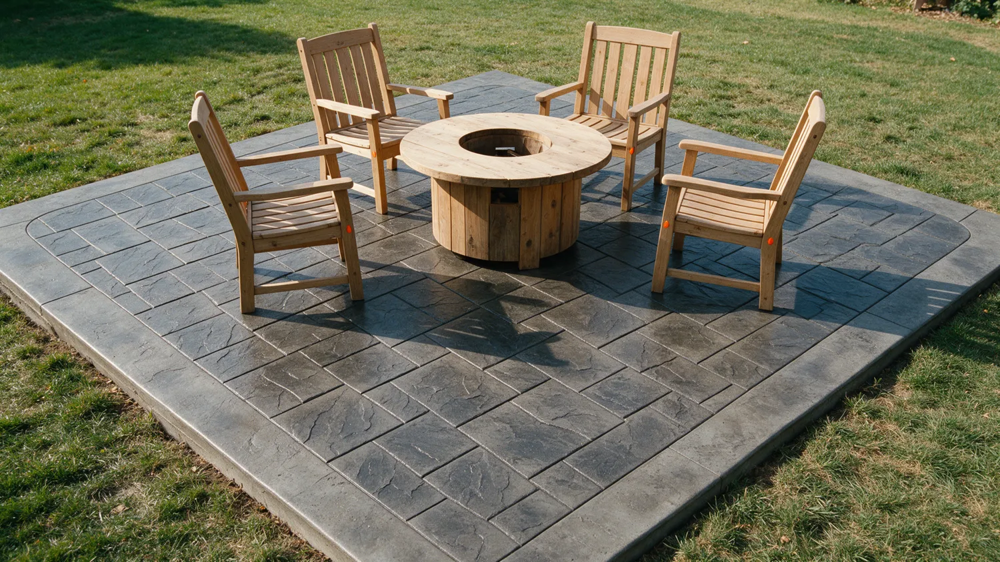

Concrete pool construction in Marana, AZ
A Marana summer runs well past 100 degrees for months, and a private pool is the best answer to it. Marana AZ Concrete Contractor Crew builds custom concrete pools, and repairs older ones, for homeowners in Marana and nearby areas. It starts with a consultation about size, shape, depth and features.

- Licensed and bonded crew
- Free written estimates
What's included.
Concrete is the one pool material you can shape to the lot instead of fitting the lot to a shell. It suits small yards, sloped ground and odd shapes. In the Sonoran desert the work that matters is underground: soil, caliche, drainage and a shell that handles heat swings and chemicals for decades.
- Consultation on size, shape, depth and features
- Design and complexity review before any digging
- Excavation with modern equipment
- Custom shapes, from geometric to free-form
- Finish options such as plaster, exposed aggregate or tile
- Landscaping elements worked in so the pool fits the property
- Repair or refurbishing of an existing pool
How we do it.
-
Consultation
We talk through how you want to use the pool, the space you have and the features you want.
-
Design review
We look at size, shape, depth and how hard the lot is to work, before any digging.
-
Excavate and build
We dig the area and build the shell, with the site walk and permits settled first.
-
Finish and tie in
Surface finish goes on and the pool is worked into the yard and landscaping around it.
When to call us.
If any of these sound familiar, the sooner someone looks at it the cheaper it usually is to fix.
- You want a pool and your yard is small, sloped or an odd shape
- An older pool is cracking, leaking or the surface is worn
- You want a custom shape a fiberglass shell cannot give you
- You want the pool and the surrounding concrete planned together
Recent work.

Pools questions.
Why choose a concrete pool?
A concrete pool is shaped on site, so size, depth, shape and features follow your plan instead of a stock mold. It also works on small or sloped lots.
Do pools need a permit in Marana?
Yes, a new pool is regulated work and Arizona has pool barrier rules. We tell you what your property needs during the free estimate.
Can you repair or refurbish an existing pool?
Yes. Call for a free site visit and a written breakdown of what it needs.
What finishes can a concrete pool have?
Plaster, exposed aggregate, tile and custom finishes are all common. We go over the choices for your yard and budget during the consultation.
Ready to talk about a pool in Marana?
Call us, or send the details and we'll call you to set up a free estimate.